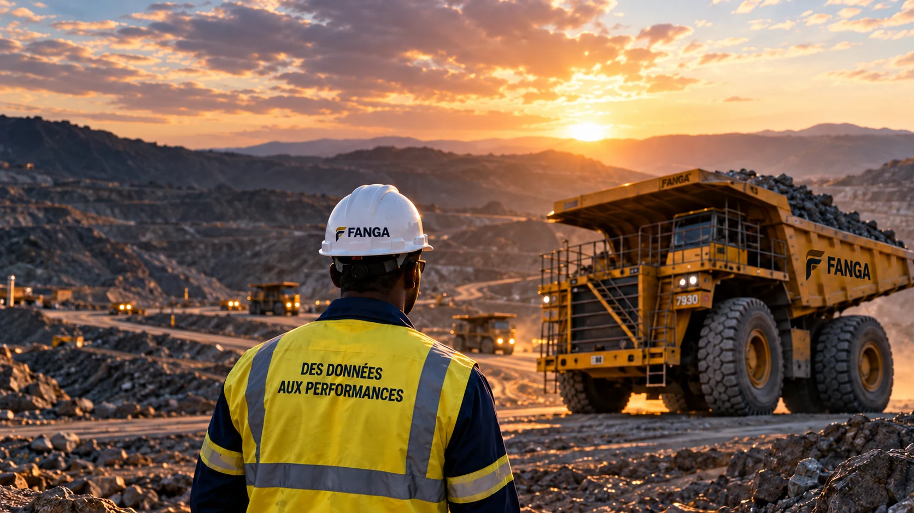
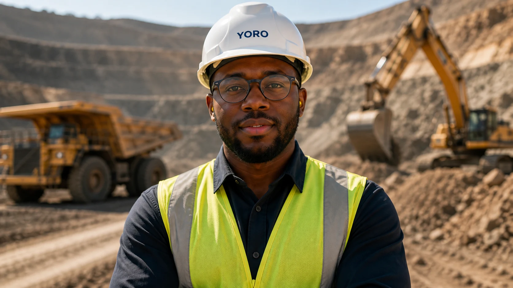

01
IoT & digitalisation
Connectez vos actifs au terrain. Capteurs industriels, télémétrie et suivi des équipements pour rendre vos opérations visibles.

De vos données de terrain aux décisions qui comptent.
Nous accompagnons la transformation digitale des
opérations minières au Mali et en Afrique de l’Ouest.
Connecter vos équipements, donner du sens à vos données et transformer vos opérations. Un même objectif : une performance qui dure.
Connectez vos actifs au terrain. Capteurs industriels, télémétrie et suivi des équipements pour rendre vos opérations visibles.
Transformez vos données en décisions éclairées. Des tableaux de bord utiles à l’analyse prédictive, chaque indicateur doit servir l’action.
Faites évoluer vos pratiques avec vos équipes. Diagnostic des processus, Lean Management et amélioration continue au plus près des opérations.
Des expertises complémentaires. Un accompagnement adapté à votre maturité digitale.

La performance commence
sur le terrain.
La bonne solution part de vos enjeux. Nous avançons avec vos équipes, du diagnostic à l’action.
Écouter vos équipes, analyser vos processus et identifier les priorités. Ensemble, nous définissons une feuille de route concrète et des indicateurs de réussite.
Relier vos équipements et vos outils, organiser la collecte et fiabiliser les données. La connectivité, la maintenance et les contraintes du site guident les choix techniques.
Construire des tableaux de bord utiles pour suivre la production, les équipements et les consommations. Identifier les écarts et faire émerger les actions prioritaires.
Mettre en œuvre les améliorations, former vos équipes et suivre les progrès. Le transfert de compétences permet d’inscrire les nouvelles pratiques dans la durée.
Accompagner la transformation des entreprises minières et industrielles du Mali et d’Afrique de l’Ouest, avec une approche attentive aux réalités locales.
Des solutions pensées ici.
Une performance construite ensemble.
Des solutions adaptées aux conditions d’exploitation, aux infrastructures et aux priorités de chaque site.
La formation et le transfert de compétences au cœur de chaque étape de votre transformation.
Des objectifs partagés, des indicateurs utiles et une démarche d’amélioration continue.
Un enjeu de digitalisation, de données ou de performance opérationnelle ? Parlons de votre terrain.
Échanger avec notre équipeTéléphone et adresse présentés à titre d’exemple.